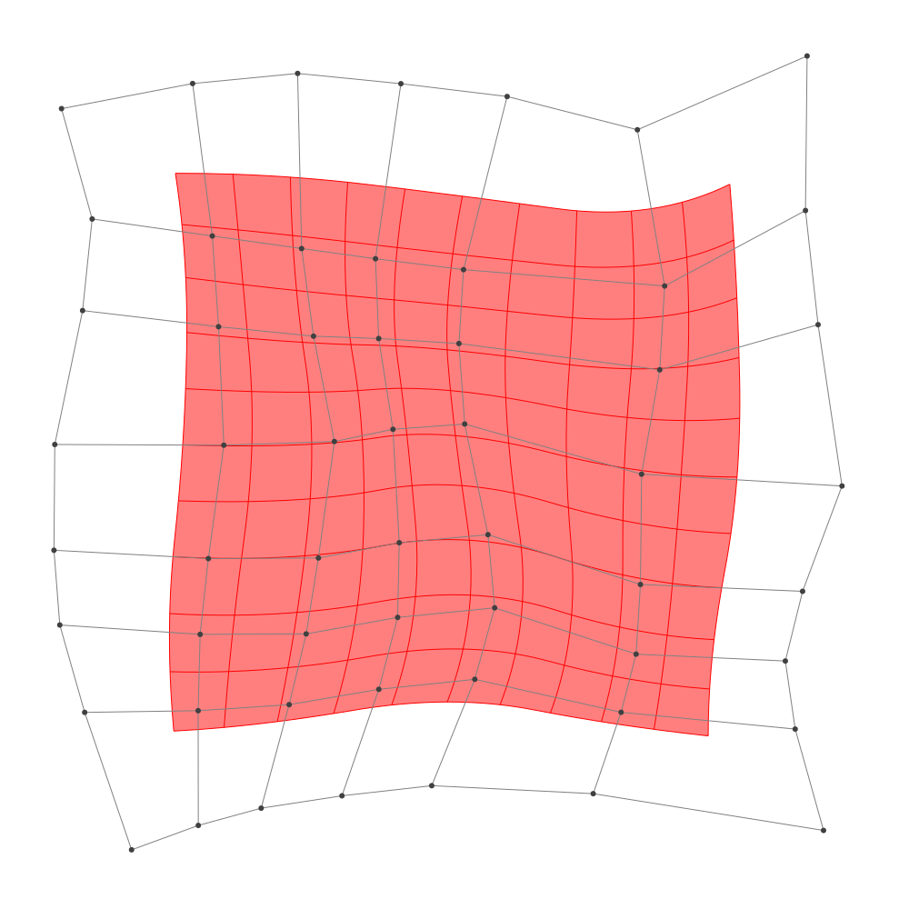
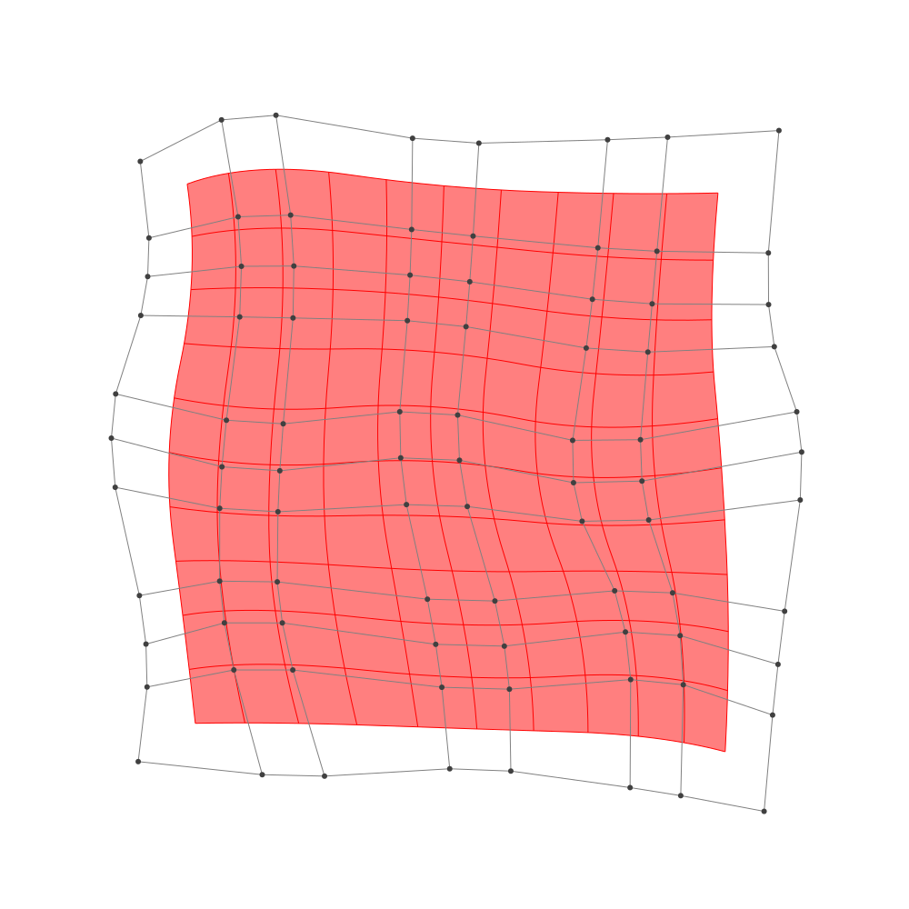

Refinement
BasicBSpline.refinement — FunctionRefinement of B-spline manifold with given B-spline spaces.
julia> p = 2 # degree of polynomial2julia> k = KnotVector(1:8) # knot vectorKnotVector([1.0, 2.0, 3.0, 4.0, 5.0, 6.0, 7.0, 8.0])julia> P = BSplineSpace{p}(k) # B-spline spaceBSplineSpace{2, Float64}(KnotVector([1.0, 2.0, 3.0, 4.0, 5.0, 6.0, 7.0, 8.0]))julia> rand_a = [SVector(rand(), rand()) for i in 1:dim(P), j in 1:dim(P)]5×5 Matrix{StaticArrays.SVector{2, Float64}}: [0.94751, 0.151139] [0.0877646, 0.670921] … [0.176684, 0.304837] [0.0768498, 0.563982] [0.535451, 0.443678] [0.395664, 0.729873] [0.0520162, 0.866551] [0.872979, 0.867375] [0.919865, 0.478954] [0.0261528, 0.768766] [0.537075, 0.261076] [0.512279, 0.0722626] [0.55986, 0.364453] [0.0402914, 0.222503] [0.379039, 0.88433]julia> a = [SVector(2*i-6.5, 2*j-6.5) for i in 1:dim(P), j in 1:dim(P)] + rand_a # random5×5 Matrix{StaticArrays.SVector{2, Float64}}: [-3.55249, -4.34886] [-4.41224, -1.82908] … [-4.32332, 3.80484] [-2.42315, -3.93602] [-1.96455, -2.05632] [-2.10434, 4.22987] [-0.447984, -3.63345] [0.372979, -1.63262] [0.419865, 3.97895] [1.52615, -3.73123] [2.03707, -2.23892] [2.01228, 3.57226] [4.05986, -4.13555] [3.54029, -2.2775] [3.87904, 4.38433]julia> M = BSplineManifold(a,(P,P)) # Define B-spline manifoldBSplineManifold{2, (2, 2), StaticArrays.SVector{2, Float64}, Tuple{BSplineSpace{2, Float64}, BSplineSpace{2, Float64}}}((BSplineSpace{2, Float64}(KnotVector([1.0, 2.0, 3.0, 4.0, 5.0, 6.0, 7.0, 8.0])), BSplineSpace{2, Float64}(KnotVector([1.0, 2.0, 3.0, 4.0, 5.0, 6.0, 7.0, 8.0]))), StaticArrays.SVector{2, Float64}[[-3.552490363395251, -4.348861013333974] [-4.412235396257614, -1.8290787096776202] … [-3.9267693385169045, 2.3766315728433547] [-4.32331552979252, 3.804837148742595]; [-2.4231501944243563, -3.9360184886306575] [-1.9645486670849224, -2.0563221862918026] … [-1.9263367920009518, 1.9629776085913238] [-2.1043356746122015, 4.229873099245213]; … ; [1.526152803864972, -3.7312344923198513] [2.0370748581143103, -2.238924400351995] … [2.3649488935116576, 1.550457338955778] [2.012278695506379, 3.5722626025484656]; [4.059860031630551, -4.135546500388717] [3.5402913507121956, -2.2774967313775956] … [3.8581027677796733, 2.3840231925321] [3.8790393150033013, 4.384330294212898]])
h-refinemnet
Insert additional knots to knot vector.
julia> k₊=(KnotVector(3.3,4.2),KnotVector(3.8,3.2,5.3)) # additional knotvectors(KnotVector([3.3, 4.2]), KnotVector([3.2, 3.8, 5.3]))julia> M_h = refinement(M,k₊=k₊) # refinement of B-spline manifoldBSplineManifold{2, (2, 2), StaticArrays.SVector{2, Float64}, Tuple{BSplineSpace{2, Float64}, BSplineSpace{2, Float64}}}((BSplineSpace{2, Float64}(KnotVector([1.0, 2.0, 3.0, 3.3, 4.0, 4.2, 5.0, 6.0, 7.0, 8.0])), BSplineSpace{2, Float64}(KnotVector([1.0, 2.0, 3.0, 3.2, 3.8, 4.0, 5.0, 5.3, 6.0, 7.0, 8.0]))), StaticArrays.SVector{2, Float64}[[-3.552490363395251, -4.348861013333974] [-4.068337383112669, -2.8369916311401617] … [-3.986251267208247, 2.5908624092282406] [-4.32331552979252, 3.804837148742595]; [-2.8184192535641692, -4.080513372276818] [-2.8201111148028866, -2.81827753059683] … [-2.664661749378102, 2.4037595991529987] [-2.880978623925313, 4.0811105165692965]; … ; [1.526152803864972, -3.7312344923198513] [1.832706036414575, -2.8358484371391373] … [2.3120483638108658, 1.8537281284946812] [2.012278695506379, 3.5722626025484656]; [4.059860031630551, -4.135546500388717] [3.7481188230795377, -3.020716638982044] … [3.8612432498632177, 2.68406925778422] [3.8790393150033013, 4.384330294212898]])julia> save_png("2dim_h-refinement.png", M_h) # save image

Note that this shape and the last shape are identical.
p-refinemnet
Increase the polynomial degree of B-spline manifold.
julia> p₊=(1,2) # additional degrees(1, 2)julia> M_p = refinement(M,p₊=p₊) # refinement of B-spline manifoldBSplineManifold{2, (3, 4), StaticArrays.SVector{2, Float64}, Tuple{BSplineSpace{3, Float64}, BSplineSpace{4, Float64}}}((BSplineSpace{3, Float64}(KnotVector([1.0, 2.0, 3.0, 3.0, 4.0, 4.0, 5.0, 5.0, 6.0, 6.0, 7.0, 8.0])), BSplineSpace{4, Float64}(KnotVector([1.0, 2.0, 3.0, 3.0, 3.0, 4.0, 4.0, 4.0, 5.0, 5.0, 5.0, 6.0, 6.0, 6.0, 7.0, 8.0]))), StaticArrays.SVector{2, Float64}[[-3.52427215344062, -3.6767786000242295] [-3.844282456521649, -2.470227948305843] … [-3.683394324055468, 2.6996860525576034] [-3.863455143971245, 3.4836796667367778]; [-2.5516542807597227, -3.5082312504416016] [-2.4322157304401544, -2.5150425991623813] … [-2.3133480749341047, 2.563698395515358] [-2.42055979196176, 3.627255314612748]; … ; [2.033230741422917, -3.410303150795896] [2.2028175406169437, -2.633669798391695] … [2.5412072707728783, 2.1939405403703414] [2.396006067205981, 3.203051658674028]; [3.5506204374053554, -3.6188878766679298] [3.376710324876816, -2.72034129858264] … [3.5989109778230404, 2.746068082435908] [3.578245355999112, 3.7480131467689644]])julia> save_png("2dim_p-refinement.png", M_p) # save image

Note that this shape and the last shape are identical.